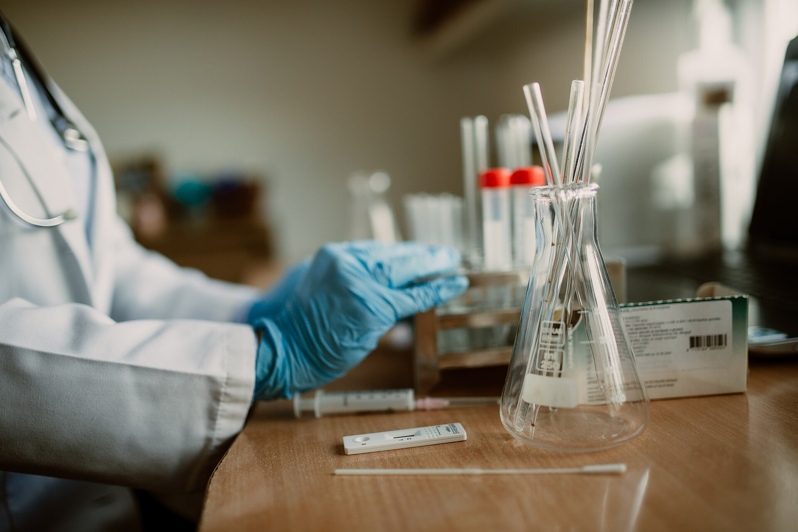

Кто мы
Poweltec основана в 2007 году и специализируется на применении полимерных технологий для повышения производительности нефтяных и газовых месторождений. Мы работаем по всему миру — от Ближнего Востока до Западной Африки и Латинской Америки.
Независимая сервисная компания, посвятившая себя повышению продуктивности месторождений
Наша миссия — давать операторам проверенные полимерные решения с измеримым результатом: меньше воды и песка, больше нефти и газа.
Alain Zaitoun
Генеральный директор, основательДоктор химической инженерии (1979). Основал компанию в 2007 году после 30 лет работы в области НИОКР. Автор множества научных публикаций и патентов, член руководящего комитета SPE Oilfield Chemistry Symposium, SPE Distinguished Lecturer (2009–2010).
Собственная лаборатория площадью 460 м²
Рюэй-Мальмезон, Франция. Полный цикл исследований — от скрининга химии до фильтрационных экспериментов в пластовых условиях.

Научно-исследовательские программы
Мы сотрудничаем с университетами, научными центрами, производителями химических реагентов и операторами. Текущие направления: полимеры МУН для высокотемпературных пластов (до 120 °C) и новое поколение продуктов для водоизоляции и пескоизоляции в экстремальных условиях.